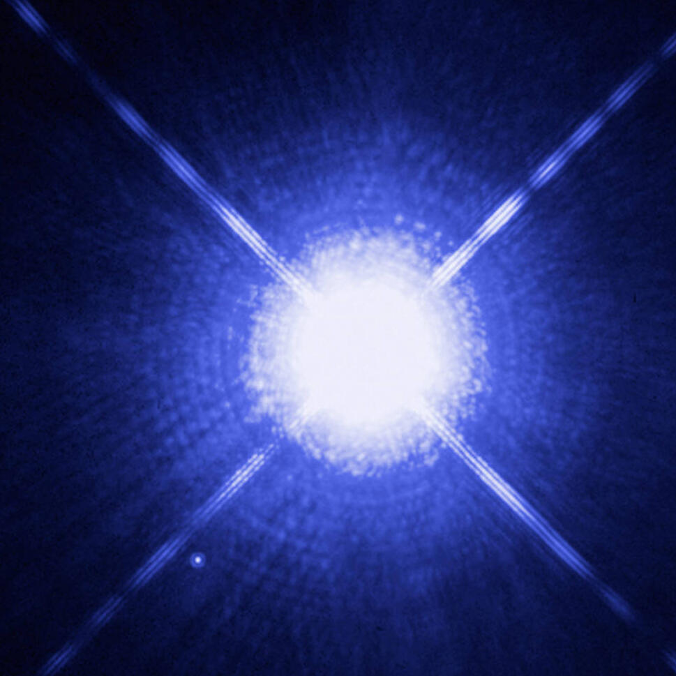

spectroscopic binaries

Sirius A and B Image Credit: NASA, ESA, H. Bond (STScI) and M. Barstow (University of Leicester)
Spectroscopic Binaries come in two forms; single-lined and double-lined (SB1s and SB2s). Both types are detected via their spectra, since they cannot be visually resolved. This is due to the small separation between components relative to their distance.
By analyzing infrared spectra, spectroscopic binaries that are embedded in young star forming regions can be identified. With enough observations an SB2 can also be characterized (orbital period, mass ratio, eccentricity, and more).
I presented the results of the work I did identifying and characterizing SB2s from a set of APOGEE (SDSS-III) near-infrared spectra in arXiv: 1706.01161. Below is a poster I presented on this work as well (or open as a pdf.)